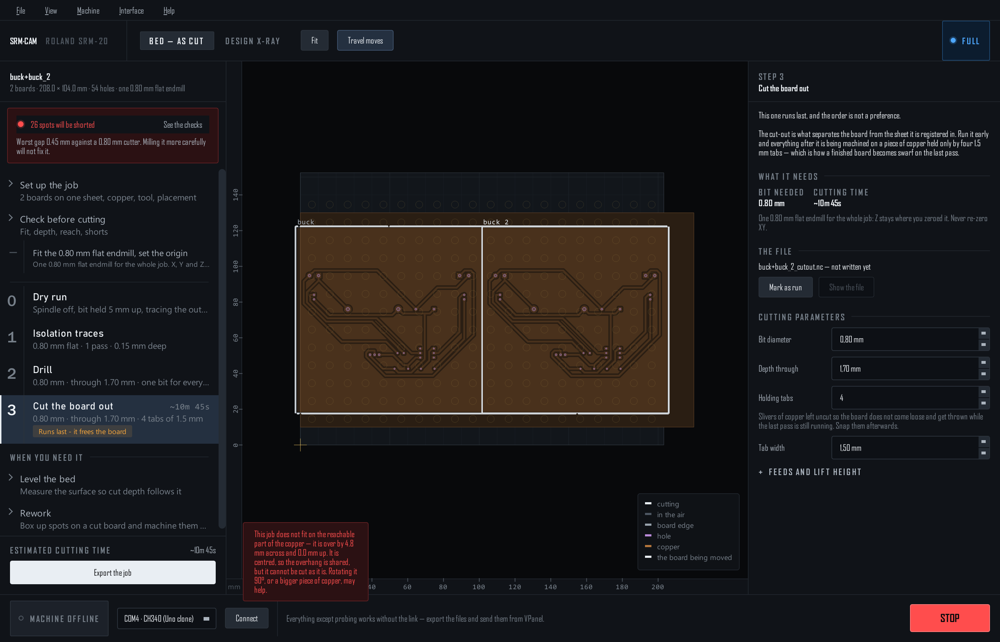
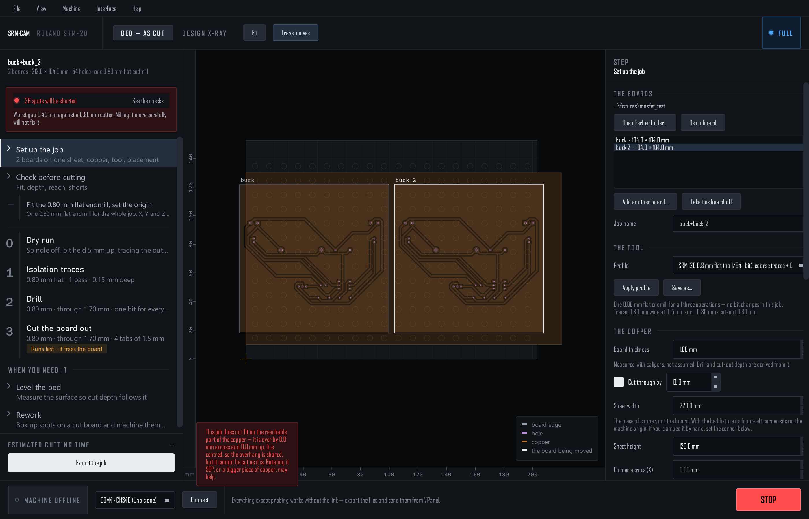

Several boards on one sheet
Two or more designs on one piece of copper, cut in one run: one trace file, one drill file, one cut-out.

Add and place
- Add File → Add another board to the sheet… (Ctrl+Shift+O), or Add another board… on the setup page. It lands to the right of what is there. The same folder twice makes two of the board (buck, buck 2).
- Pick Click a board on the bed, or in the list on the setup page. The placement fields, the rotation and the arrow keys act on the picked board; the others stay put.
- Arrange Lay them side by side lines them up 4 mm apart. Butt them together lines them up touching. Centre it on the bed moves the whole sheet's worth together.
- Take off Take this board off removes the picked one.

The cut-out
- Boards closer than the cutter share one cut, centred in the gap. Each loses half of what the cutter takes beyond the gap — 0.4 mm a side for touching boards and a 0.8 mm bit. The check says the number.
- An edge on the sheet's edge is not cut. Once the copper's size and corner are set, a board edge within 0.5 mm of the sheet's edge is the sheet's edge, and the cut-out leaves that side out. A board hanging that little off the copper is a warning, not a failure.
- Boards between one and two bit widths apart get two rings that overlap harmlessly. A strip of waste under a millimetre between them is a warning: it can break loose and jam the cutter.
- Boards that overlap cannot be cut, and the export refuses.
Everything else
- The files are named after every board (
buck+buck_2_traces.nc) unless you type a job name. - The dry run traces every outline. Isolation sees all the copper at once, so two boards placed close enough to short each other show up in the checks like any other short.
- The probe grid, the screws and the checks see the whole sheet's worth.
- Setups save every board with its own placement and rotation.
Single-sided only
A double-sided job is one board registered to its holes. Add boards to a single-sided job.